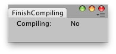

EditorApplication.isCompiling
public static bool isCompiling;
Description 描述
Is editor currently compiling scripts? (Read Only)

Editor Window that tells you if Unity is compiling scripts.
// Small example that shows when scripts are being compiled.
using UnityEditor; using UnityEngine;
public class isCompilingExample : EditorWindow { [MenuItem("Examples/Is compiling?")] static void Init() { EditorWindow window = GetWindowWithRect(typeof(isCompilingExample), new Rect(0, 0, 200, 200)); window.Show(); }
void OnGUI() { EditorGUILayout.LabelField("Compiling:", EditorApplication.isCompiling ? "Yes" : "No");
this.Repaint(); } }